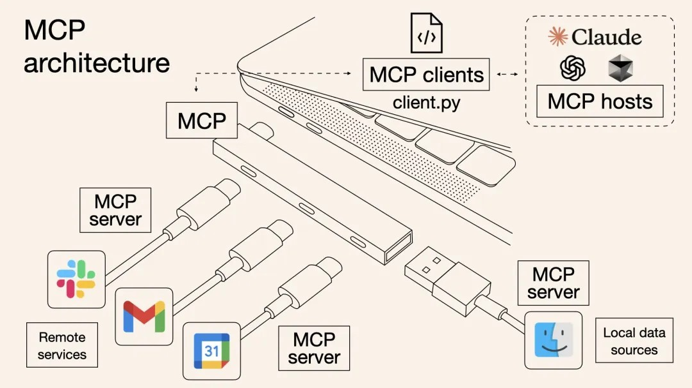

MCP란 무엇인가
MCP(Model Context Protocol)는 AI가 외부 서비스와 데이터를 주고받기 위한 공개 표준 연결 방식입니다. Anthropic이 2024년 말에 공개했고, 지금은 여러 AI 도구가 함께 씁니다. 흔히 “AI용 USB-C”에 비유합니다. 기기마다 다른 케이블 대신 USB-C 하나로 연결하듯, 서비스마다 따로 만들던 연결을 MCP 하나로 맞춥니다.

Cowork에서는 MCP 서버를 커넥터라고 부릅니다. 커넥터를 연결하면 Claude가 그 서비스의 도구(tool)를 직접 호출합니다. 예를 들어 메일을 검색하고, 문서를 만들고, 이미지를 생성합니다.
| 구성 | 설명 | 이 화면에서 |
|---|---|---|
| MCP 호스트 | MCP 서버에 연결해 도구를 쓰는 AI 앱 | Claude 데스크톱 · Cowork |
| MCP 클라이언트 | 호스트 안에서 서버 하나와 연결을 맺고 주고받는 부분. 허브의 포트에 해당합니다. | 앱이 알아서 처리 (설정 없음) |
| MCP 서버 | 서비스가 제공하는 연결 창구. Gmail·Slack 같은 원격 서비스나 내 컴퓨터의 로컬 데이터에 이어지고, 어떤 도구를 쓸 수 있는지 알려 줍니다. | 사용자 지정 → 커넥터 |
| 도구 (tool) | 서버가 제공하는 개별 동작. 검색·읽기·쓰기·생성 등 | 대화 중 “도구 사용” 표시 |
커넥터는 사용자 지정 → 커넥터에서 추가하고 관리합니다. 목록에 있는 공식 커넥터를 고르거나, 서비스가 알려 주는 MCP 서버 주소로 사용자 지정 커넥터를 추가합니다. 입력창의 + → 커넥터에서 대화마다 켜고 끌 수 있습니다.
MCP 서버는 내 계정 권한으로 외부 서비스에서 실제 동작을 합니다. 믿을 수 있는 회사가 만든 서버만 연결하고, 연결할 때 요청하는 권한을 읽어 봅니다. 회사 계정·실제 업무 데이터 연결은 사내 정책을 먼저 확인합니다.
Skill과 MCP의 차이
Anthropic은 둘의 차이를 이렇게 설명합니다. MCP는 매장의 진열대에 들어갈 수 있게 해 주는 것이고, 스킬은 그 매장 직원의 전문 지식입니다. 진열대에 들어갈 수 있어도 무엇을 어떤 순서로 골라야 하는지 모르면 결과가 들쭉날쭉합니다.
| 구분 | Skill | MCP (커넥터) |
|---|---|---|
| 한마디로 | 일하는 방법을 알려 준다 | 일할 도구와 데이터에 연결해 준다 |
| 담는 것 | 작업 순서·결과 형식·규칙·예시 (SKILL.md와 참고 파일) | 외부 서비스의 기능 (검색·읽기·쓰기·생성) |
| 있는 곳 | 내 계정에 저장된 지침 파일 | 외부 회사가 운영하는 서버 |
| 만드는 사람 | 나 · 우리 팀 (1.2 · 1.4에서 직접 만듦) | 주로 서비스 제공 회사 |
| 없으면? | 할 수는 있지만 매번 설명해야 하고 결과가 달라진다 | 그 서비스에 접근 자체를 할 수 없다 |
| 예 | team-share · daily-save-brand-guide | Gmail · Google Drive · Notion · Figma · Higgsfield |
함께 쓰면
MCP가 연결을 맡고, 스킬이 순서와 기준을 맡습니다. 예를 들어 브랜드 규격 스킬이 “어떤 색·문구·로고 규칙을 지킬지”를 정하고, 이미지 생성 MCP가 “실제로 이미지를 만드는 일”을 합니다.
색·톤·로고 규칙, 금지 표현, 결과 형식
이미지·영상 생성 모델 호출
매번 같은 기준으로 반복 생산
플러그인은 이 둘을 묶은 꾸러미입니다. 스킬·커넥터·명령을 한 번에 설치할 수 있습니다 (1.7).
사례: Higgsfield MCP로 이미지 만들기
Higgsfield는 여러 이미지·영상 생성 모델을 한곳에서 쓰는 크리에이티브 서비스입니다. 2026년 4월 Claude용 MCP 커넥터를 공개해, Claude에서 리서치·프롬프트 다듬기·광고 이미지와 영상 제작까지 한 대화에서 할 수 있게 되었습니다. Claude가 직접 그림을 그리는 것이 아니라, Higgsfield의 생성 모델을 도구로 호출하는 구조입니다.
Higgsfield 계정이 필요하고, 생성할 때 크레딧이 차감됩니다(처음에는 무료 생성분 제공, 이후 유료). 무료 플랜은 쓸 수 있는 모델이 제한되므로 Claude에게 내 플랜에서 쓸 수 있는 모델을 고르게 합니다. 계정이 없으면 화면을 보며 흐름만 따라옵니다. 지원 모델과 요금은 자주 바뀌니 Higgsfield 안내에서 확인합니다.
- 사이드바에서 사용자 지정을 열고 위쪽 커넥터 탭을 선택합니다.
- 탐색에서
Higgsfield를 검색해 선택하고 연결을 누릅니다. - Higgsfield 계정으로 로그인하고 요청하는 권한을 확인한 뒤 허용합니다.
확인: 사용자 지정 → 커넥터 → 내 항목에 Higgsfield가 연결됨으로 보이고, 입력창의 + → 커넥터에서 켜져 있어야 합니다.
목록에서 찾을 수 없을 때
커넥터 → + 추가 → 사용자 지정 커넥터 추가에서 이름은 Higgsfield, URL은 https://mcp.higgsfield.ai/mcp로 넣고 연결합니다.
Higgsfield 커넥터로 가상 적립 앱 "데일리세이브"의 인스타그램 광고 키비주얼을 만들어줘. [아트 디렉션] - 장면: 코발트 블루(#1D4ED8)에서 밝은 일렉트릭 블루로 이어지는 그라디언트 공간에 최신 스마트폰이 살짝 기울어져 떠 있고, 유리 질감의 블루 코인과 화이트 코인이 계단처럼 위로 쌓여 올라가는 모습 - 스타일: 하이엔드 3D 렌더, 스튜디오 조명, 림 라이트, 부드러운 반사와 빛 번짐, 얕은 심도, 글로벌 브랜드 광고 캠페인 수준의 디테일 - 분위기: 신뢰감 있고 산뜻한 느낌, 매일 조금씩 쌓이는 성취감 - 구도: 1:1, 왼쪽 위 1/3은 로고와 카피가 들어갈 여백으로 비워둬. - 이미지 안에 글자·숫자·로고·실존 인물은 넣지 마. [진행] 1. 위 내용을 Higgsfield용 영문 프롬프트로 다듬어 먼저 보여줘. 2. 내 플랜에서 쓸 수 있는 모델 중 이 장면에 가장 잘 맞는 모델을 추천하고, 예상 크레딧을 알려줘. 3. 내가 확인하면 2장을 생성하고, 더 좋은 쪽과 그 이유를 한 줄로 알려줘.
확인: 생성 전에 영문 프롬프트·모델·크레딧을 먼저 보여 주는지, 결과가 브랜드 블루 톤이고 글자·로고 없이 여백이 남아 있는지 봅니다. 대화 중 Higgsfield 도구를 사용했다는 표시가 나타납니다.
결과가 밋밋하면 프롬프트를 짧게 줄이기보다 장면·재질·조명·카메라·분위기를 더 구체적으로 적는 편이 효과적입니다.
2.4에서 만든 daily-save-brand-guide 스킬로 기준을 정하고, Higgsfield로 만듭니다. 5.2의 “스킬 + MCP”를 직접 확인하는 단계입니다.
/daily-save-brand-guide 데일리세이브 신규 캠페인 "매일 조금씩, 확실하게"의 광고 비주얼 세트를 만들어줘. [1단계: 아트 디렉션] 브랜드 규격을 먼저 읽고, 아래 3컷의 장면·카메라·조명·색·여백 위치를 표로 정리한 뒤 컷마다 Higgsfield용 영문 프롬프트를 써줘. 1. 키비주얼(1:1): STEP 2에서 고른 이미지의 톤을 이어가는 프리미엄 3D 장면 2. 라이프스타일(4:5): 해 뜨는 출근길 지하철 창가에서 휴대폰 알림을 보고 미소 짓는 20대 직장인, 에디토리얼 사진, 85mm 렌즈, 얕은 심도, 코발트 블루 조명과 따뜻한 햇빛이 섞인 색감 3. 스토리(9:16): 매일 한 칸씩 불이 켜지는 달력 타일 위로 블루 코인이 계단처럼 올라가는 미니멀 3D 공통: 메인 컬러 #1D4ED8 계열로 세 컷의 색감을 통일하고, 이미지 안에 글자·숫자·로고는 넣지 마. 로고와 카피가 들어갈 자리는 여백으로 비워둬. [2단계: 생성] Higgsfield 커넥터로 3컷을 생성해. 생성 전에 사용할 모델과 총 예상 크레딧을 알려주고, 내가 확인하면 진행해. 색이 브랜드와 다르거나 흐린 컷이 있으면 프롬프트를 고쳐 그 컷만 한 번 다시 생성해. [3단계: 캠페인 보드] 생성한 이미지에 ready 폴더의 CI를 규격대로 얹고(어두운 배경은 흰색 로고), 컷마다 헤드라인 한 줄과 CTA 버튼을 넣은 광고 시안을 만들어. 세 시안을 한 화면에 모은 캠페인 보드를 output/higgsfield/캠페인보드.html 로 저장해. 카피는 수익률을 약속하거나 과장하지 말고, 브랜드 규격과 다른 점은 마지막에 「확인 필요」로 적어줘.
확인: 세 컷의 색감과 톤이 하나의 캠페인처럼 이어지는지, CI가 배경에 맞는 색으로 규격대로 얹혔는지, 카피가 과장 없이 들어갔는지 캠페인 보드에서 봅니다. 이 흐름이 마음에 들면 4.2의 방법으로 “광고 시안 만들기” 스킬로 저장할 수 있습니다.
생성 이미지를 실제 광고·외부 게시물에 쓰기 전에 요금제의 상업적 이용 조건, 초상권·저작권, 사내 브랜드 검수를 확인합니다. 다 쓴 커넥터는 사용자 지정 → 커넥터에서 연결을 끊을 수 있습니다.
출처: Anthropic · Skills와 MCP · Claude 도움말 · 사용자 지정 커넥터 · Higgsfield · Claude 연결 안내